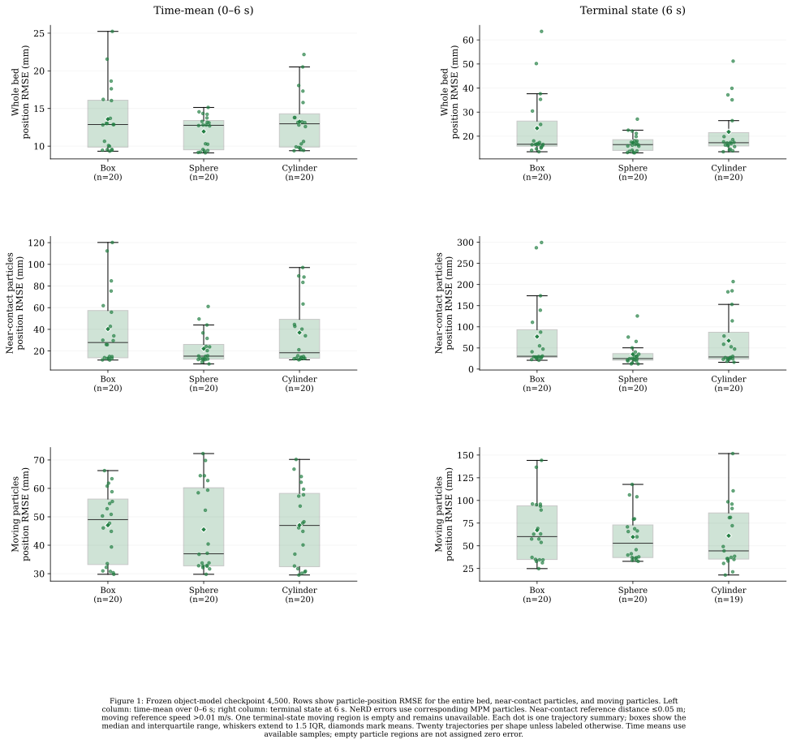
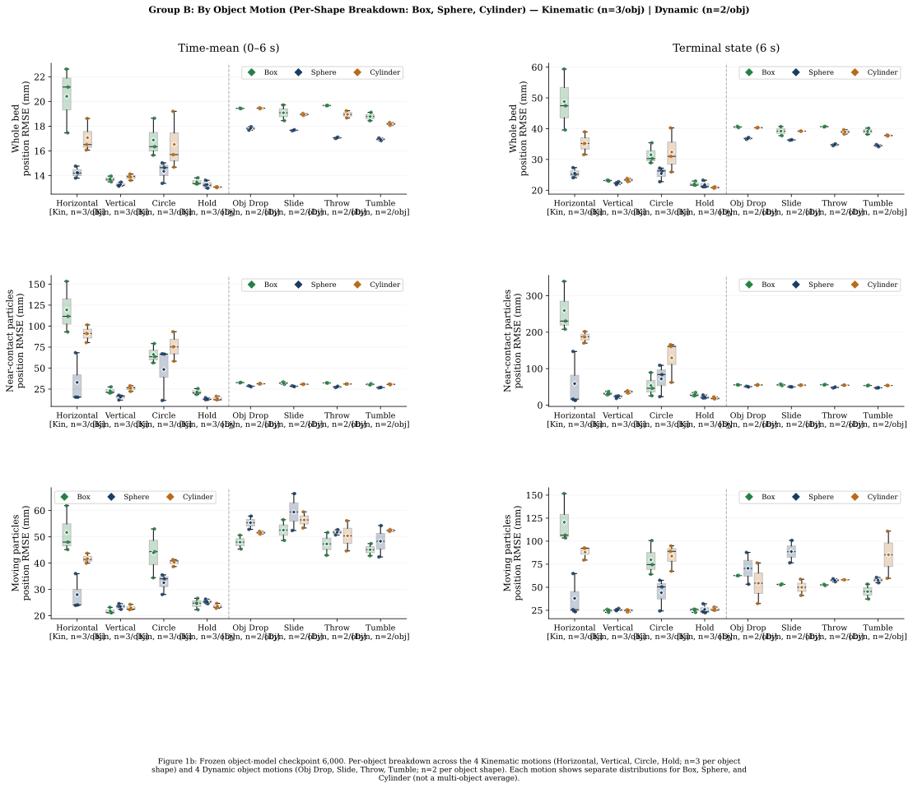
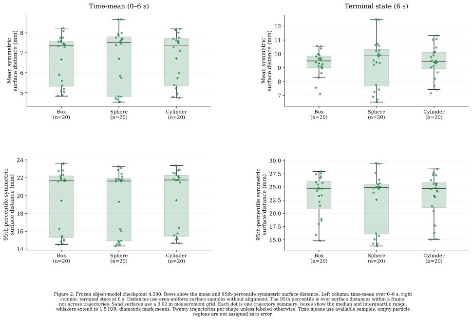
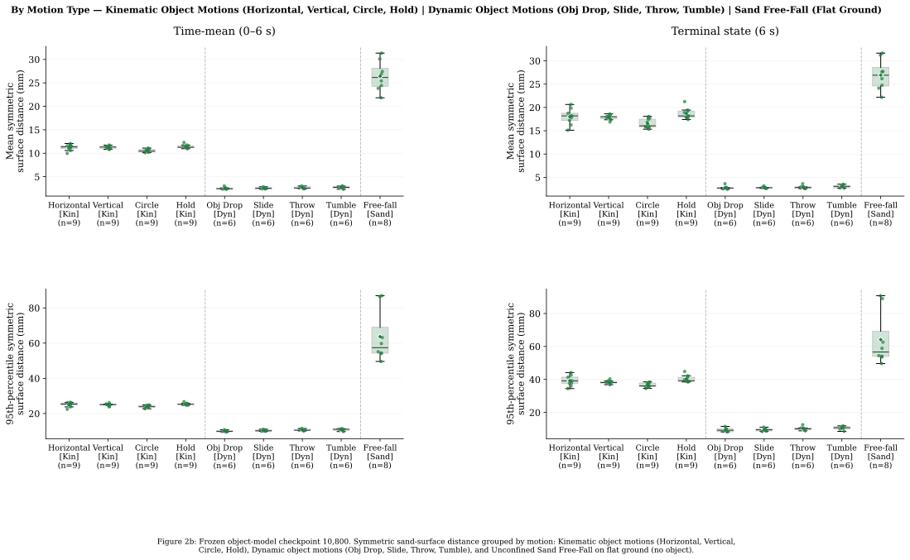
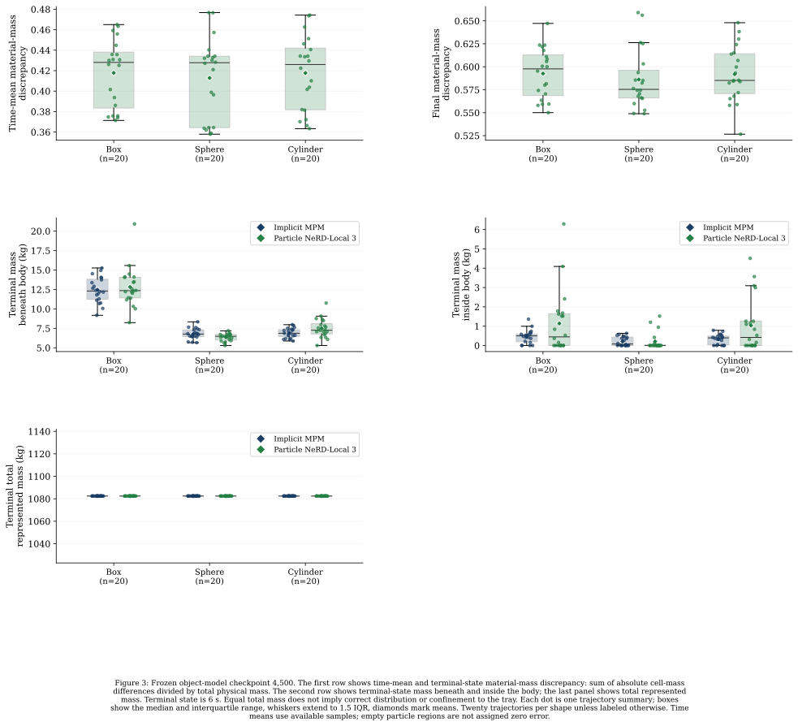
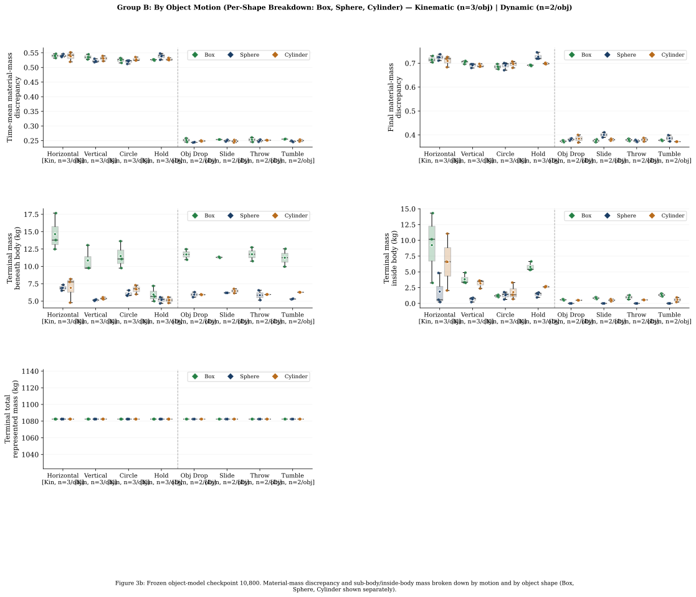
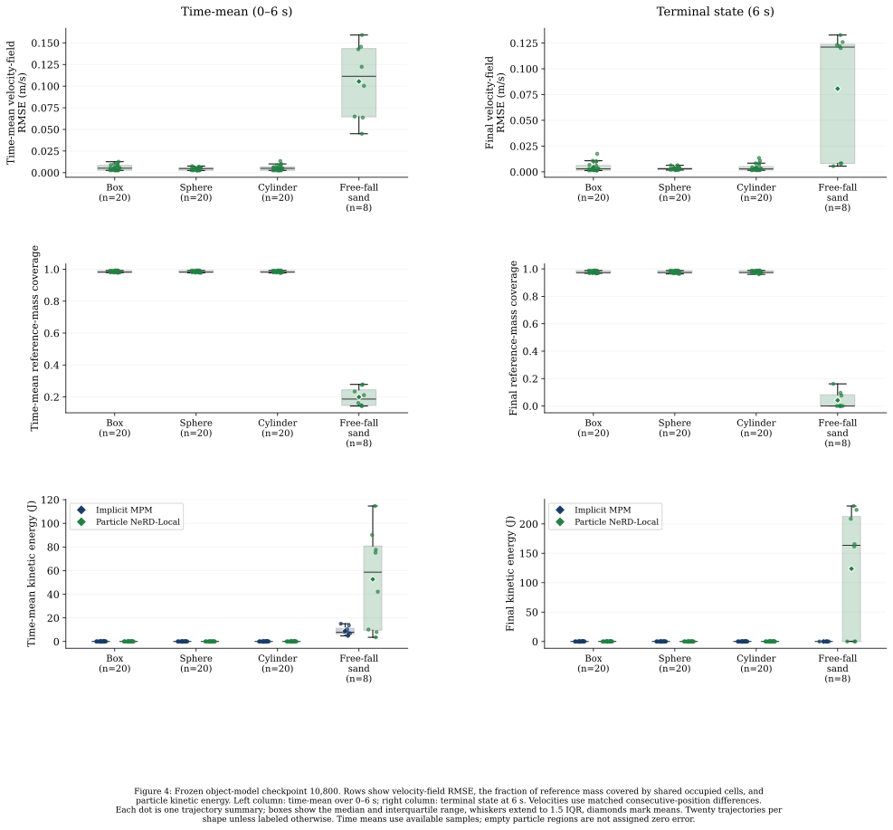
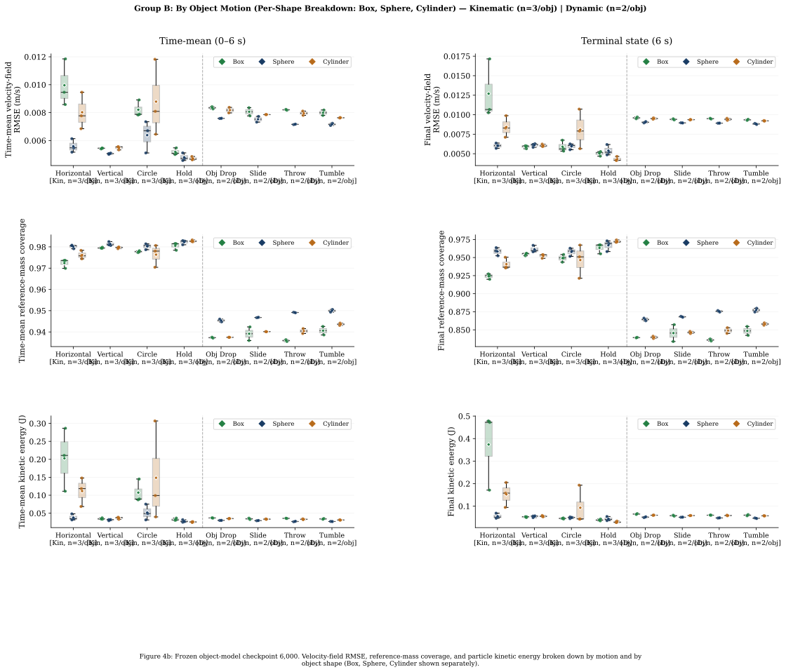
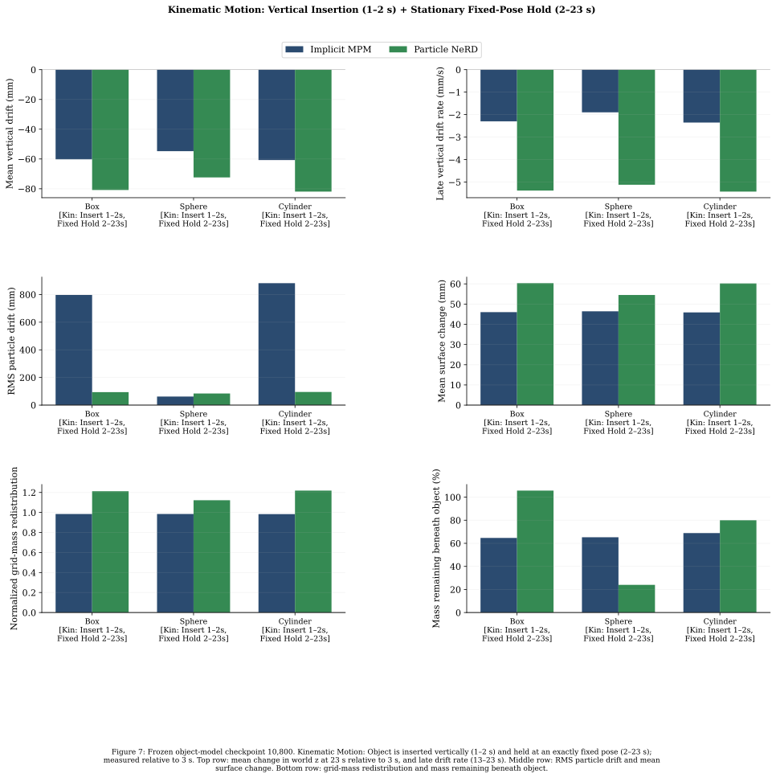
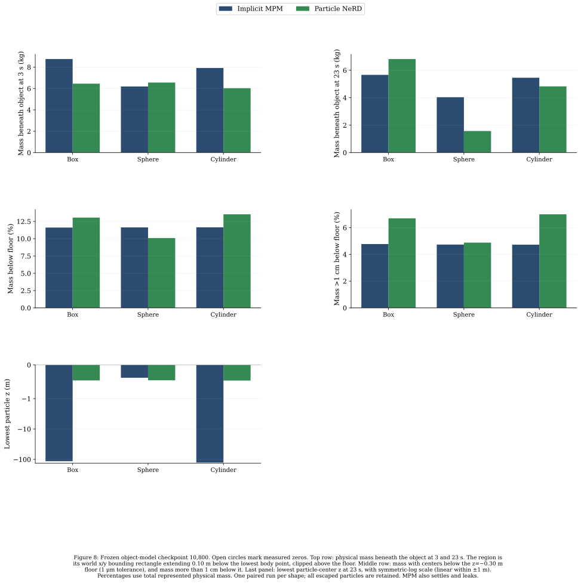

BOX · SPHERE · CYLINDER
Particle NeRD: Elementary object & free-fall sand benchmark
One shared Particle NeRD particle model: recorded-motion particle evaluation (separated by interacting object and by motion type) and spatio-temporal consistency.
Evaluation conditions
| Item | Condition |
|---|---|
| Object geometry | Box: 0.24 × 0.18 × 0.12 m; Sphere: radius 0.10 m; Cylinder: radius 0.10 m, height 0.12 m, local z axis. |
| Coordinates | Shared world coordinates; z points upward, gravity is (0, 0, −9.81) m/s². The nominal initial sand fill level is z = 0 m and the rigid floor is z = −0.30 m. |
| Dataset and split | 680 six-second trajectories: 200 each for Box, Sphere and Cylinder, plus 80 unconfined Free-fall sand trajectories on flat ground; 544 training, 68 validation, 68 held-out test trajectories. |
| Motions: kinematic (object prescribed) | 360 trajectories (120 per object shape; 36 held-out test): Horizontal motion, Vertical motion, Circular motion, and Holding. Object poses are prescribed. |
| Motions: dynamic (object gravity & contact) | 240 trajectories (80 per object shape; 24 held-out test): Drop, Slide, Throw, and Tumble. Two-kilogram objects are released at 1 s and respond to gravity and sand contact. |
| Motions: free-fall sand (flat ground, no object) | 80 trajectories (8 held-out test): Unconfined 3D mid-air sand blocks/columns dropped onto open flat ground (no retaining box walls). |
| Sand and resolution | 2 × 1.2 × 0.30 m flat bed (20,646 particles) for object interactions; unconfined 3D sand blocks/columns on open flat ground for free-fall; MPM grid 0.04 m; particle spacing 0.032 m, radius 0.016 m. |
| Material | Density 1,600 kg/m³, Young’s modulus 10¹⁵ Pa, Poisson ratio 0.3, material friction 0.48, yield pressure 10¹⁵ Pa; collider friction 1.0. |
| Sampling | Native interval 0.005 s (200 Hz). Particle velocities are derived from consecutive positions. |
| Shared model | One checkpoint from update 10,800, selected by the lowest validation loss. Test trajectories are never used for selection. |
| Model architecture | ParticleNeRD-Local (translation-invariant + CConv + 3D-RoPE slices): 4 attention blocks, hidden size 128, cconv 64, 4 heads, 64 slices, 3 history frames; displacement scale 0.02 m. |
| Checkpoint SHA-256 | ede105296473849fec9087d185f68fc93bcfed689b840a9e4a1d1b34dd467e69 |
Recorded motions for metrics 1–4
Each elementary object (Box, Sphere, Cylinder) is evaluated across 20 held-out six-second trajectories: 12 Kinematic (prescribed object pose) trajectories (3 each for Horizontal, Vertical, Circular, and Holding) and 8 Dynamic (object gravity & contact) trajectories (2 each for Drop, Slide, Throw, and Tumble). In addition, Free-fall sand (flat ground, no object) evaluates 8 held-out six-second trajectories of unconfined 3D mid-air sand blocks dropped onto open flat ground.
1. Particle-position error
Definition in metrics/README.md
68/68 held-out six-second trajectories completed (60 elementary-object trajectories across Box, Sphere, Cylinder: 12 Kinematic [Horizontal, Vertical, Circle, Hold] and 8 Dynamic [Drop, Slide, Throw, Tumble] per shape; plus 8 unconfined Free-fall sand trajectories on flat ground). Each dot is one trajectory summary. Boxes show median and interquartile range; diamonds mark means. Whiskers extend to 1.5 IQR and every measured value is plotted, including outliers.
By interacting object (Box, Sphere, Cylinder across 8 object motions)

By motion type (Kinematic object motions, Dynamic object motions, and Unconfined sand free-fall)

2. Sand-surface error
Definition in metrics/README.md
The mean and 95th-percentile symmetric surface distance measure the reconstructed sand shape on a 0.02 m measurement grid (separate from the 0.04 m MPM simulation grid).
By interacting object (Box, Sphere, Cylinder across 8 object motions)

By motion type (Kinematic object motions, Dynamic object motions, and Unconfined sand free-fall)

3. Material distribution and sub-foot depletion
Definition in metrics/README.md
Material-mass discrepancy on a common 0.02 m grid. For the local depletion diagnostic, the region is beneath the box, sphere, or cylinder.
By interacting object (Box, Sphere, Cylinder across 8 object motions)

By motion type (Kinematic object motions, Dynamic object motions, and Unconfined sand free-fall)

4. Velocity fields and kinetic energy
Definition in metrics/README.md
Velocity-field RMSE, shared occupied-cell reference-mass coverage, and particle kinetic energy.
By interacting object (Box, Sphere, Cylinder across 8 object motions)

By motion type (Kinematic object motions, Dynamic object motions, and Unconfined sand free-fall)

5. Contact-force accuracy and standing stability
Definition in metrics/README.md
Dynamic-object contact-force evaluation (20-second vertical drop-and-support tests for Box, Sphere, and Cylinder) and 20-second fully dynamic closed-loop simulations with NeRD force feedback are published on the dedicated page: Elementary object dynamic simulation & contact-force benchmark.
6. Spatio-temporal consistency under a stationary object
Definition in metrics/README.md
Kinematic Motion (Vertical Insertion 1–2 s + Fixed-Pose Hold 2–23 s): Box, Sphere, and Cylinder each follow a prescribed vertical insertion from 1–2 s and are then held at an exactly fixed pose through 23 s. Translation, rotation, and input linear/angular velocities are verified constant/zero throughout measurement. Each method is compared with its own state at 3 s through 23 s.

